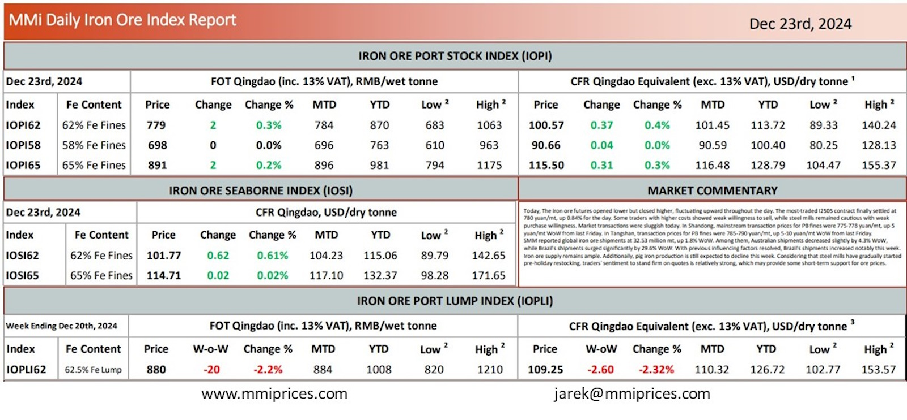

Today, The iron ore futures opened lower but closed higher, fluctuating upward throughout the day. The most-traded I2505 contractfinally settled at 780 yuan/mt, up 0.84% for the day. Some traders with higher costs showed weak willingness to sell, while steel mills remained cautious with weak purchase willingness. Market transactions were sluggish today. In Shandong, mainstream transaction prices for PB fines were 775-778 yuan/mt, up 5 yuan/mt WoW from last Friday. In Tangshan, transaction prices for PB fines were 785-790 yuan/mt, up 5-10 yuan/mt WoW from last Friday. SMM reported global iron ore shipments at 32.53 million mt, up 1.8% WoW. Among them, Australian shipments decreased slightly by 4.3% WoW, while Brazil’s shipments surged significantly by 29.6% WoW. With previous influencing factors resolved, Brazil’s shipments increased notably this week. Iron ore supply remains ample. Additionally, pig iron production is still expected to decline this week. Considering that steel mills have gradually started pre-holiday restocking, traders’ sentiment to stand firm on quotes is relatively strong, which may provide some short-term support for ore prices.

Download PDFSource: Metals Market Index (MMI)